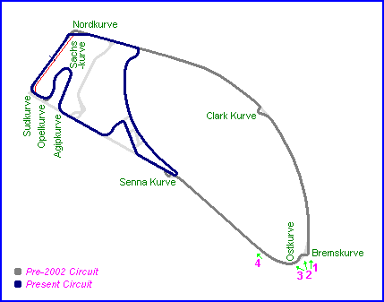
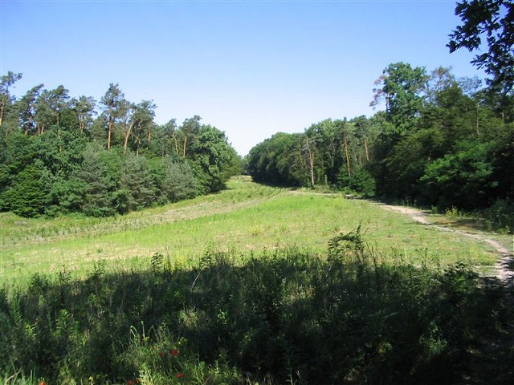
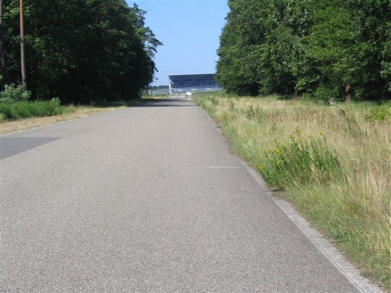

Hockenheim, Germany
| Type: | Permanent Road Course | |
| Length: | 4.241 Miles / 6.825 km (94-01) | |
| Used: | 1938-2001 (Long 'Ostkurve' Circuit) | |
| Photos Taken: | 19th June 2005 |
| Map of circuit location |
Photographs from the Ostkurve on the old circuit, which was broken up as part of the reprofiling work in 2002.
Numbers and arrows on the map indicate where the photographs were taken. Scroll down to view.

Return to racingcircuits.net's Photo Archive Main Index

1 - Looking back at the destroyed Waldgerade
(Forest Straight) from the Bremskurve.

4 - Straight to Senna Kurve (with new
Mercedes Stand in distance)
Photos ©Frank Bornemann. Reproduced here with kind permission.